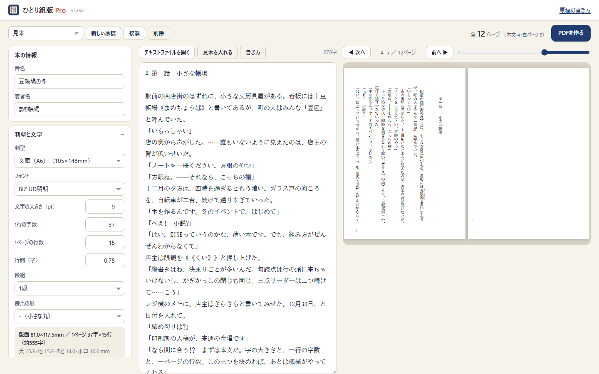

長い小説も、貼るだけで
入稿できる縦書きPDFに。
ひとり組版 Pro は、同人誌・文学フリマの小説本の「本文」を作る組版ソフトです。ページ数の上限がなく、原稿をいくつも保存でき、HTMLファイル1つでネットにつながっていなくても動きます。
価格：1,480円（発売記念 980円）（買い切り・月額料金なし）

できること
文庫・新書・四六判・B6・A5、1段と2段組。字の大きさ・字数・行数・行間・余白を変えると、すぐに組み直します。版面と余白（天・地・のど・小口）も表示。
行頭・行末の禁則、句読点のぶら下げ、追い出しと行末そろえ。ルビ・傍点・縦中横・三点リーダー・ダッシュ・英単語の横向き。
pixiv・小説家になろう・カクヨム・青空文庫のルビや改ページの書き方を、そのまま読みます。テキストファイル（UTF-8・Shift_JIS）を開けます。
ページ番号、扉や白ページの隠しノンブル、書名と章の柱、見出しからの目次、奥付。総ページ数は4の倍数にそろえます。
判型どおりの用紙サイズ（塗り足し3mmも可）で、フォントを埋め込んだPDFに。ページ数の上限なし。
通信しないので、発表前の原稿も安心。原稿をいくつも保存し、バックアップ・復元で引っ越しも。
無料のWeb版との違い
| 無料のWeb版 | Pro版 | |
|---|---|---|
| 組版・プレビュー（判型・禁則・ルビ・目次・奥付） | ○ | ○ |
| PDFのページ数 | 32ページまで | 上限なし |
| 保存できる原稿 | 1つ | いくつでも |
| ノンブルの開始番号 | 1から | 自由に |
| バックアップ・復元 | － | ○ |
| ネットにつながっていなくても動く | － | ○（HTMLファイル1つ。オフラインのときはパソコンの書体で組みます） |
よくある質問
動作環境は？
Windows・Mac の Chrome か Edge をおすすめします（PDFを作るときに用紙の大きさを守るため）。ダウンロードしたHTMLファイルをダブルクリックして開くだけで、インストールやアカウント登録は不要です。
無料のWeb版との違いは？
組版のしかたは同じです。Pro版は、PDFのページ数に上限がなく、原稿をいくつも保存でき、ノンブルの開始番号を変えられ、バックアップ・復元ができ、ネットにつながっていなくても動きます。
原稿はどこに保存されますか？
ファイルを開いたブラウザの中（端末内）です。インターネットに送信されることはありません。バックアップファイルに書き出して、別のパソコンへ移すこともできます。
作った本は売ってもいいですか？
はい。ひとり組版で作ったPDF（あなたの本）は、自由に印刷・販売・配布できます。クレジットの表記もいりません。
表紙も作れますか？
表紙は作れません。本文（中身のページ）を作る道具です。背の幅の目安は、無料の「背幅の計算」で出せます。
買う前に試せますか？
無料のWeb版で、組版とプレビューをすべて試せます（PDFは32ページまで）。Pro版と同じ画面の体験版（PDFに「体験版」の文字が入る）もあります。